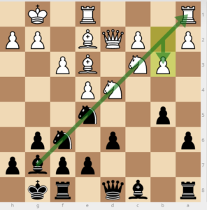

Sicilian Defense Dragon Variation
In chess, the Dragon Variation is one of the main lines of the Sicilian Defence and begins with the moves:
1. e4 c5
2. Nf3 d6
3. d4 cxd4
4. Nxd4 Nf6
5. Nc3 g6
2. ... d6 : protecting agains the push e4-e5, allowing to put a knight on f6.
4. ...Nf6: controls e4 and prepare castle kings's side.
5. g6: Black fianchettoes his bishop on g7, castling on the king's side while aiming the bishop at the center and queenside.
In one of the most popular and theoretically important lines, the Yugoslav Variation, White meets Black's setup with Be3, Qd2 and Bh6, exchanging off the Dragon bishop, followed by launching a kingside pawn storm with h4–h5 and g4. To involve the a1-rook in the attack, White usually castles queenside, placing the white king on the semi-open c-file. The result is often both sides attacking the other's king with all available resources. The line is considered one of the sharpest of all chess openings
The Main ideas of the Sicilian Dragon
Do not put your pawn on e5 (since it completely blocks in your dark squared bishop). Either keep your pawn on e6, or more commonly, on it’s starting square of e7;
Force your opponent to put their pawns on b3 or b4 (you can do this by putting your pawn on b5 - to support Knight outpost square on c4). That way the dark squared bishop controls the long diagonal (and attacks the rook on a1);
If your opponent castles queenside (which they normally will), you can attack the weak b2 square with your bishop and queen on that long diagonal (which in many cases can result in a quick checkmate).
Alexander Alekhine vs Mikhail BotvinnikNottingham
Nottingham ENG14 Jun 19361/2-1/2
1. e4 Notes by Alekhinec5 2. Nf3 d6 3. d4 On another ocassion I would probably have played 3 b4 a sacrifice for which White in this particular position has to my mind sufficient strategical reasons. But playing for the first time with the Soviet Champion, for whose play I have the greatest appreciation, I did not like the idea of being accused of overweening confidence, undue boldness ( and this independent of the result of the game) or of such things as "underestimating," "bluster", etc.cxd4 4. Nxd4 Nf6 5. Nc3 g6 6. Be2 Bg7 7. Be3 Already intending to make the following pawn advance. Otherwise I would first play 7 O-O followed by Nb3.Nc6 8. Nb3 Be6 9. f4 In order to be able to answer 9...d5 by 10 e5.O-O 10. g4 I first saw this interesting move in a game of the talented Slovakian Master, Foltys, from the recent tournament at Podebrad but did not know that it had already experimented with in the Moscow Tournament. As the present game shows, the move permits White to force a quick draw - but no more.d5 ! Already played by Botvinnik against Lowenfish (Moscow, 1936) who answered 11 e5 d4 12 Nxd4 Nxd4 13 Bxd4 Nxg4 14 Qd3 a6 15 O-O-O with about even chances.11. f5 Bc8 12. exd5 Nb4 13. d6 Doubtless the best move. If instead 13 fxg6 hxg6 14 Bf3 then 14...Nxg4 15 Bxg4 Bxg4 16 Qxg4 Nxc2+ 17 Ke2 Nxa1 18 Rxa1 Bxc3 19 Qxd5 with rook and three pawns for two minor pieces.Qxd6 Of course not 13...exd6 because of 14 g5 followed by f6.14. Bc5 The alternative 14 Qxd6 exd6 15 O-O-O gxf5 was certainly not dangerous for Black.Qf4 ! Again the only move as 14...Qxd1+ 15 Rxd1! Nc6 (...Nxc2+ 16 Kd2) 16 g5 followed by 17 f6 etc., would give White a distinct advantage.15. Rf1 White, too, has nothing better than to accept the piece sacrifice.Qxh2 16. Bxb4 Nxg4 This second sacrifice forces the perpetual check.17. Bxg4 Qg3+ 18. Rf2 Of course not 18 Kd2? ...Bh6+ and wins.Qg1+ 19. Rf1 Qg3+ 20. Rf2 Qg1+